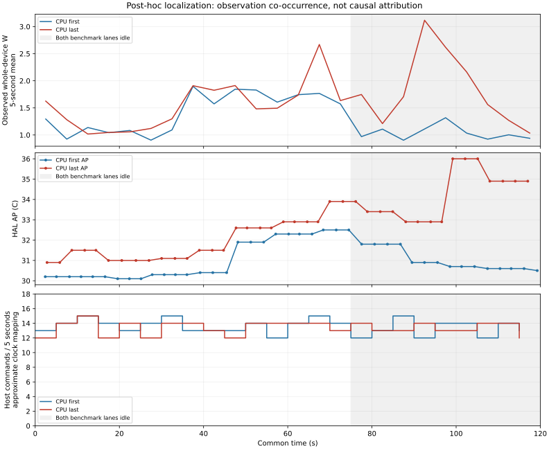

사후 원인 국소화. 원인 미확정·모형 수정 아님. 6세션 보존, 정확도 PASS 없음.
75–120초 CPU 관측46.551→82.138J, 명령119→120. 활성 요청0. 에너지/AP 정책 순위는 검증된 오차 한도 부재로 유보합니다.
전체 판독·시계·재현 · 기존 독립 확인
명령의 비슷한 빈도는 같은 계측 비용이나 배경 활동 부재를 증명하지 않습니다. 실측 재실행0·계수 변경0·experiment_ready=false.